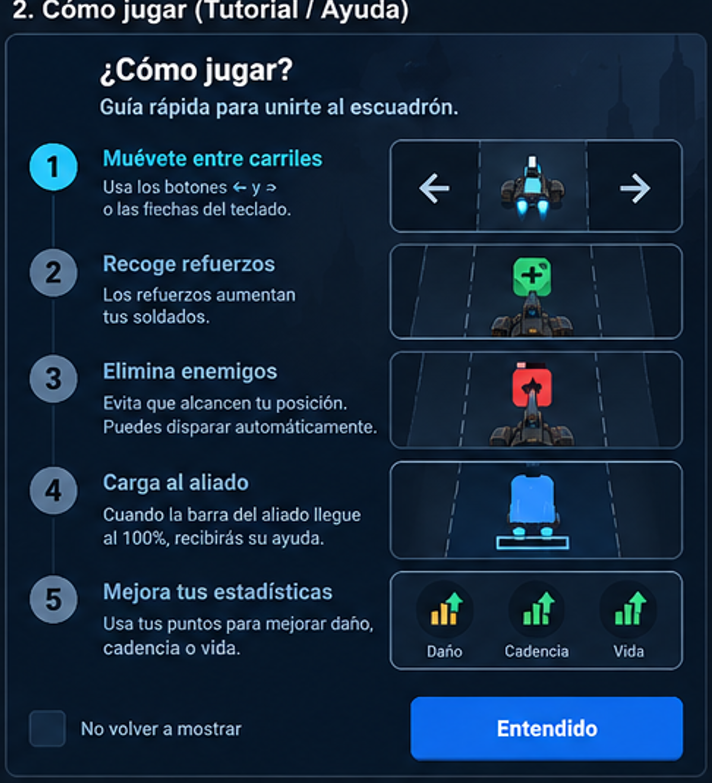
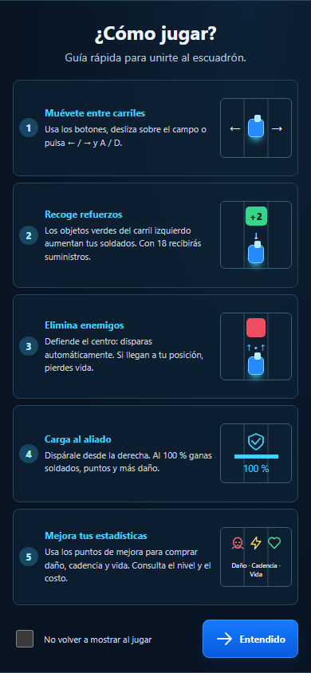
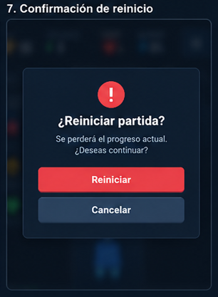
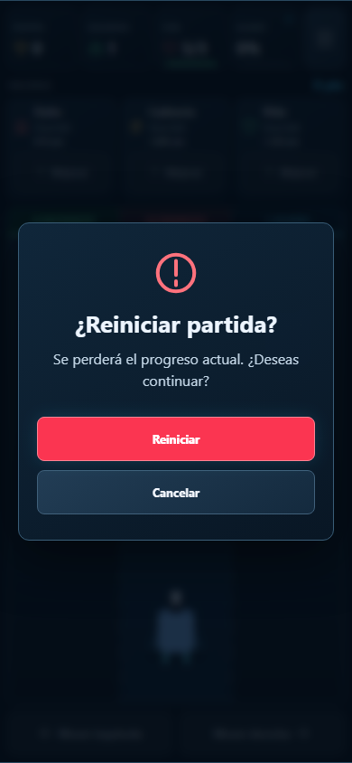

Evidencias UX/UI — Escuadrón de Tres CarrilesCómo jugar
Pantalla nueva: cinco pasos ilustrados, preferencia persistente y retorno a pausa sin perder la partida.
Antes — aplicación originalInterfaz nueva.
No existía una pantalla anterior equivalente.
Propuesta — wireframe del Word
Imagen incrustada 9; fuente: ACT1_CARLOS_ALBERTO_PEREZ_LORA.docx.Después — aplicación funcional
Chrome, 390 × 844. Puntuaciones
Tabla semántica, cuatro criterios de orden, medallas y duraciones legibles.
Partida
HUD, barras de vida y carga, carriles semánticos, tarjetas de mejoras y controles identificados.
Pausa
Fondo oscurecido, Continuar como acción principal y reinicio protegido.
Partida terminada
Estadísticas completas y comparación dinámica con la marca previa.
Confirmación de reinicio
Diálogo nuevo, Cancelar con foco inicial y protección frente a atajos y doble activación.
Antes — aplicación originalInterfaz nueva.
No existía una pantalla anterior equivalente.
Propuesta — wireframe del Word
Imagen incrustada 14; fuente: ACT1_CARLOS_ALBERTO_PEREZ_LORA.docx.Después — aplicación funcional
Chrome, 390 × 844. Ajustes y adaptación de pantalla
Ajustes funcionales. Capturas adicionales del menú, tutorial y partida: 320 × 568, 390 × 844, 768 × 1024, 1366 × 900 y 844 × 390 (horizontal), disponibles en after/.